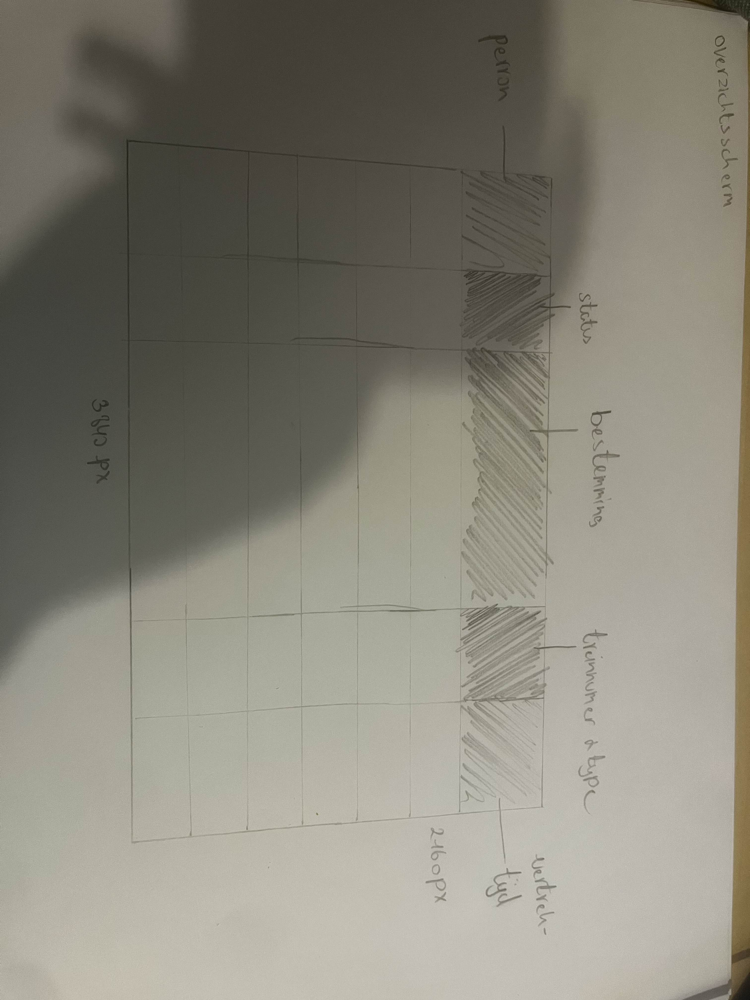
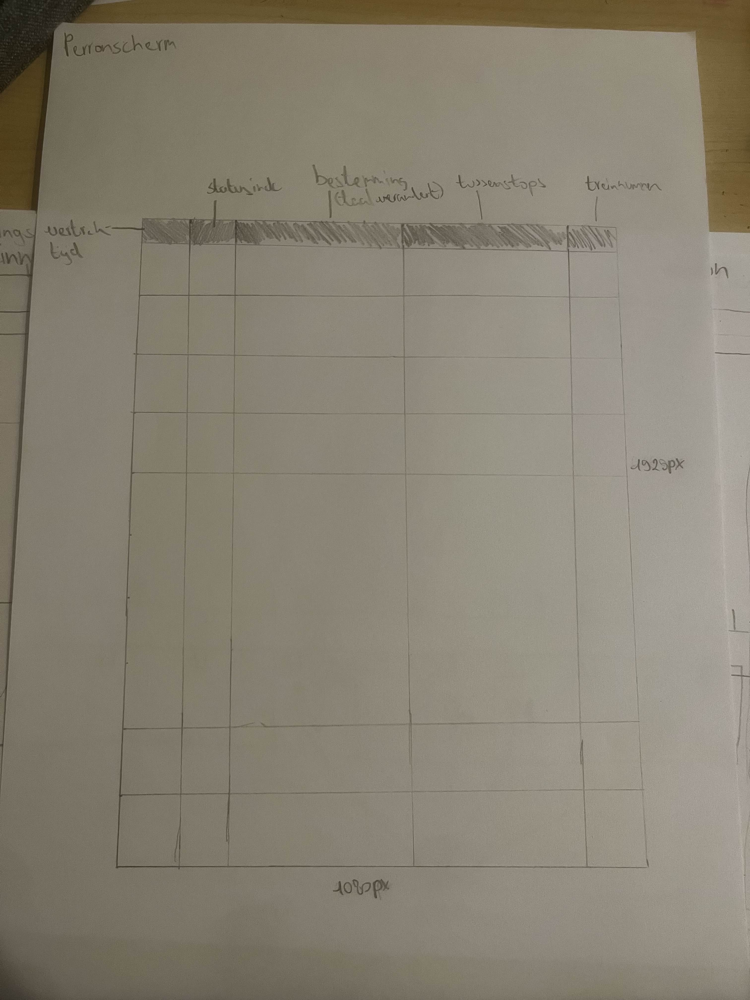
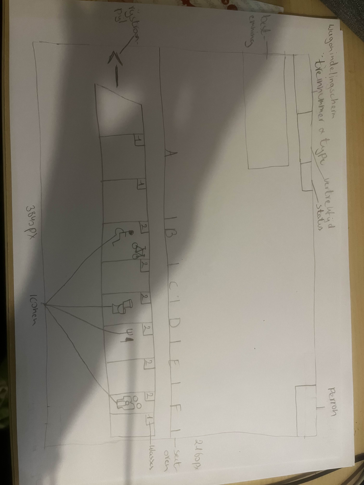
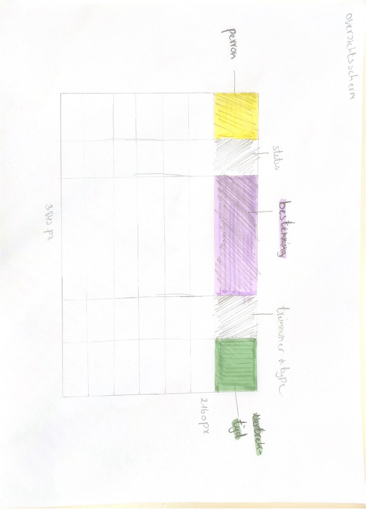
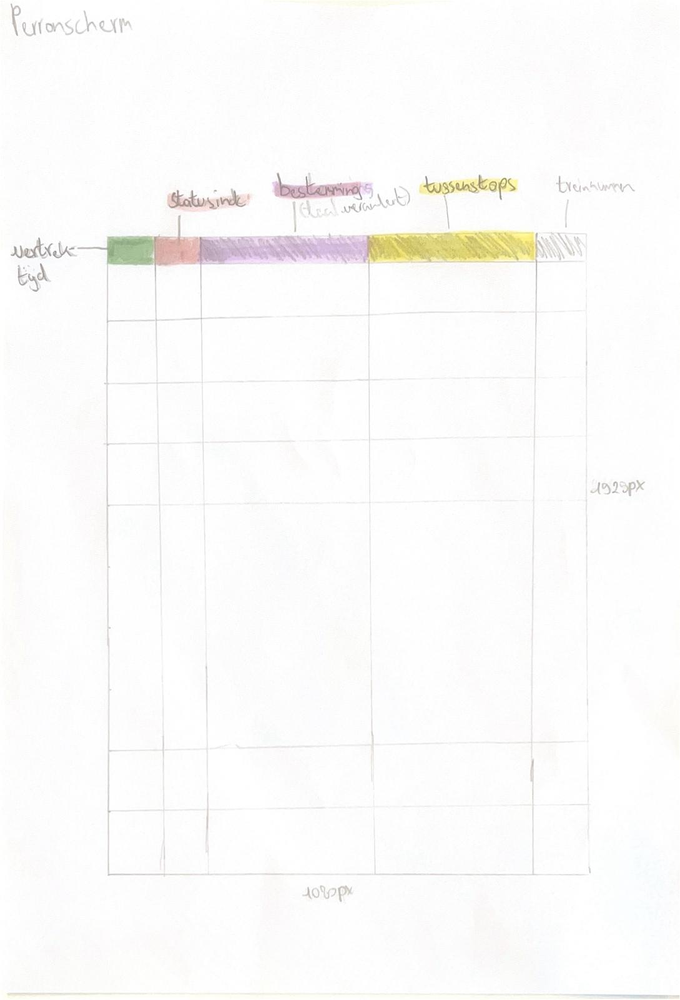
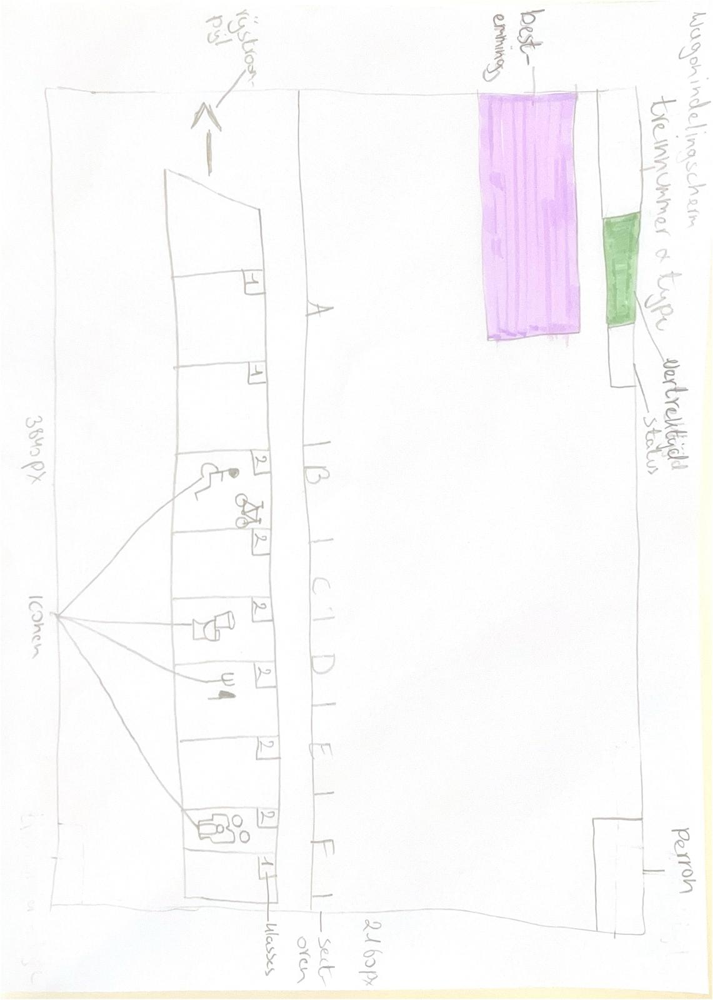

Voordat we aan de slag gaan met het ontwerpen van de treinschermen,
is het altijd belangrijk om
een gebruiksonderzoek te doen,
om er achter te komen wat de noden en wensen zijn van de klanten.
Hiervoor gebruiken we een gebruiksonderzoek, we hebben het deze keer simpel gehouden maar met 1 vraag te stellen,
en deze vervolgens aan een aantal vrienden en familie te stellen.
Vraag: Wat zoek je eerst op een treinscherm?
Antwoord: perron, tijd & destinatie.
Dit zijn mijn eerste schetsen die ik heb gemaakt.
Ik was begonnen met een grid systeem om al de oppervlakte die ik had op te verdelen.



Feedback in de les:
Kleuren gebruiken om de belangrijke dingen aan te duiden, iconen toevoegen.
Deze feedback heb ik vervolgens toegepast in mijn volgende schetsen hieronder,
deze heb ik ook ingescand zodat het duidelijker zichtbaar is.
Overzichtscherm:

Perrsonscherm:

Wagonindelingscherm:
